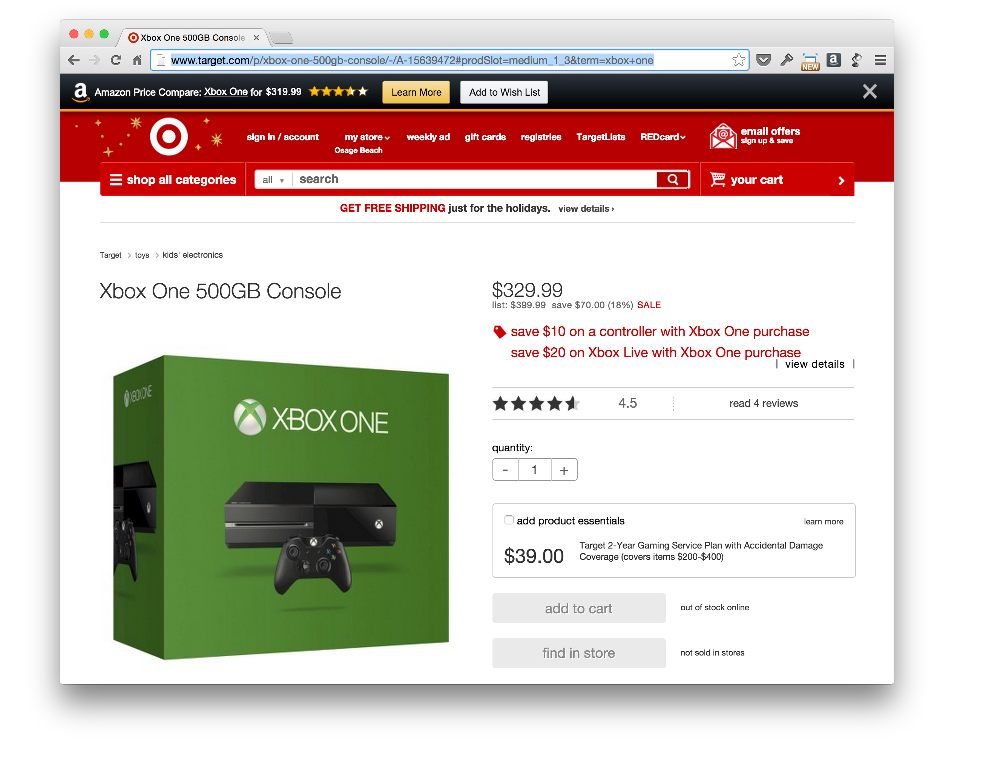
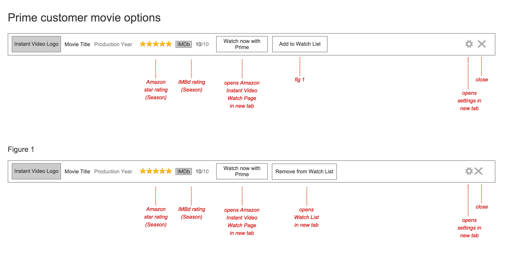
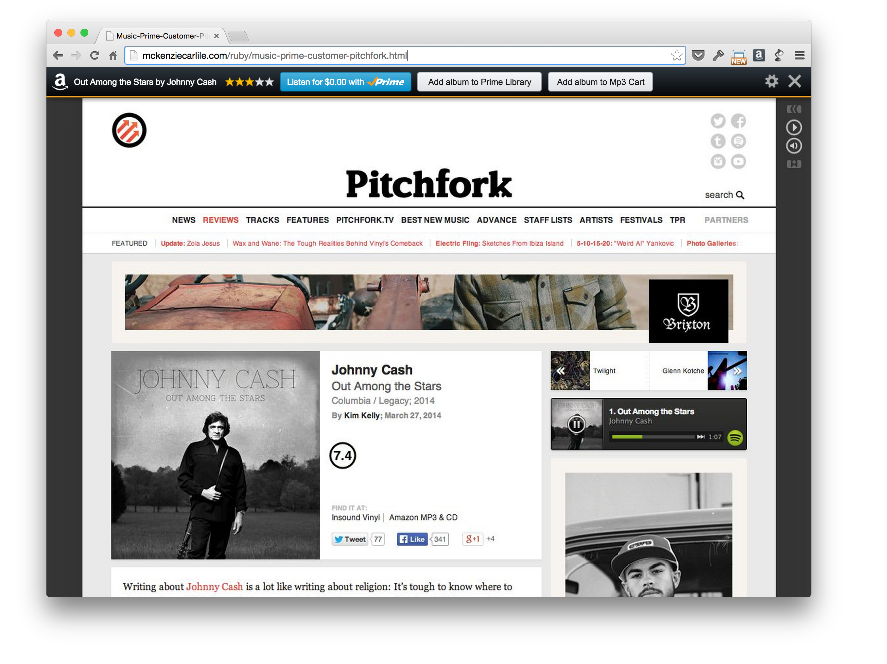
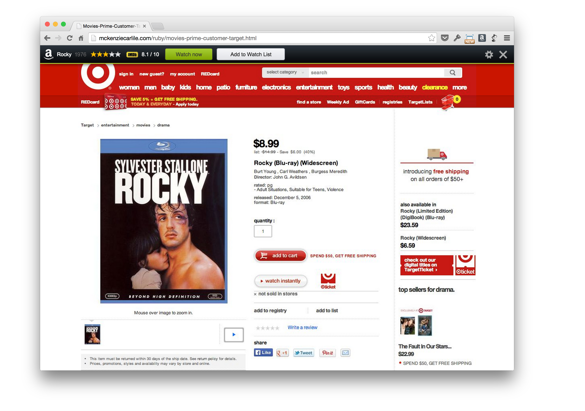

Amazon Internship Project
Creating a new browser extension for the Amazon Traffic Team
Note: details that would have violated my non-disclosure agreement with Amazon have not been included in this case study. The information included in this document was approved by my manager at Amazon and cleared to be published publically online.
The project
During the Summer of 2014, I interned as a User Experience Design Intern at Amazon in Seattle. During this internship, I was tasked with the ideation of a new browser extension that allows Prime customers to discover free media content. Working closely with my manager and other designers, I defined user scenarios and took the concept from initial sketches to final responsive prototypes.
The platform
I joined Amazon's Browser Integration Technology group. This team builds Amazon products and services for desktop browsers such as Chrome, Firefox and Safari. The team's flagship product is the Amazon 1Button App. When customers install the 1BA plugin, they can opt in to receive price notifications when shopping on other retailer websites. Customers love this service because alerts can save them money on items they were already shopping for.
The opportunity
The 1 Button App works well for checking prices on physical items. But not everything that Amazon offers is for sale. During my internship project, Amazon announced Prime Music, a new streaming service that gives Prime members free access to a huge library of music. The launch was just the latest in a series of new products and services that Amazon has created to increase the value of a Prime membership. With the Kindle Lending Library, Amazon Instant Video and Prime Music, Amazon Prime subscribers have access to an unprecedented collection of books, movies, tv shows and songs. But the problem is that many of these customers aren't aware that they have access to this content for free.

I decided to focus my summer internship project on tackling this issue. Working with my manager, we came up with the following goals we wanted the project to achieve.
Goals
- Leverage Amazon's digital media services to increase the value of a Prime subscription
- Create new experiences that increase the value of the 1Button application for Amazon Prime customers
- Increase Prime conversion rates
- Deliver surprisingly relevant and accurate contextual suggestions
Process
Over the course of the internship, I determined several use cases for how the application would behave when the customer searched for books, videos or movies on the web. Depending on the customer's Amazon account status, prior purchasing history and availability of the content, the browser extension would display contextual suggestions.

Over the course of the internship, I determined several use cases for how the application would behave when the customer searched for books, videos or movies on the web. Depending on the customer's Amazon account status, prior purchasing history and availability of the content, the browser extension would display contextual suggestions.
Finally, I used the visual design language established by one of my coworkers to make a prototype that showcased the plugin’s interactions.
 
Want to get in touch?